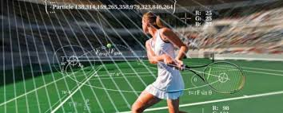

| Inicio |
Su importancia |
Las matematicas |
Álgebra |
En las matematicas |
en sus ramas |
Las matematicas en la vida cotidiana
Desde hace más de dos milenios, una cierta familiaridad con la matemática ha sido considerada como parte indispensable de la formación intelectual de toda persona. Por otra parte, las matemáticas son un cuerpo de conocimiento que progresa de forma continua y cuya función fundamental es la de describir el mundo al resolver problemas prácticos, además de su interacción con otros conocimientos.
Sin embargo, en la vida diaria, siempre se utilizan las matemáticas, pero ni siquiera se piensa en ellas. Las matemáticas son una herramienta muy importante para la vida, pues son la clave del éxito en todos los campos y nos rodean por todas partes. Existen en varias formas, por ejemplo, siempre que se realiza una llamada telefónica, se cambia de canal, cuando se viaja de un lugar a otro, cuando se maneja dinero, etc., en todos esos trabajos las matemáticas están involucradas sin querer.
Es así como, en la mayoría de las actividades que se realizan, se usan conceptos matemáticos básicos o avanzados dependiendo de la formación y más de las laborares u oficios que se desempeñan. Muchas técnicas de resolución (de problemas) se descubrieron mediante discusiones matemáticas o mediante actividades matemáticas que involucraban objetos reales.
Sin duda, existen matemáticas en la vida cotidiana, pero ni todas son evidentes ni todas las personas las perciben de la misma forma. La búsqueda de matemáticas en situaciones cotidianas tiene una doble motivación. Por una parte, comprender la situación en cuestión; y por otra, aprender matemáticas inspiradas por la vida.
Las matemáticas hacen la vida más fácil y ordenada para evitar el caos y las confusiones. Ciertas cosas, cualidades y habilidades promovidas por las matemáticas son la resolución de problemas, la creatividad, el pensamiento crítico y la capacidad de razonar y comunicarse de manera efectiva. Existen muchas aplicaciones de las matemáticas en la naturaleza, las industrias, los sectores bancarios, la tecnología, especialmente en los campos de investigación, etc. Por ejemplo, también se usan en genética y en análisis estadístico. Para mantener la calidad de la educación, el desarrollo del interés por las matemáticas es fundamental.
